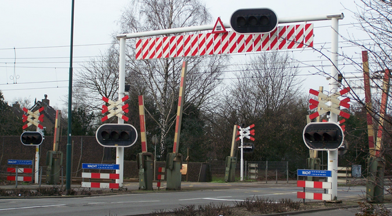

Sensoren en actuatoren
Drie belangrijke woorden:
| Signaal: | een meting, berekening of vaste waarde. |
| Sensor: | een apparaat dat signalen uitzendt. |
| Actuator: | een apparaat dat op signalen reageert. |
Sensoren en RoboTiles

De borden: constante signalen.
De lichten: uitgezonden signalen.
Over het algemeen zendt een sensor maar één signaal uit: dat wat de sensor meet.
Bijvoorbeeld zendt een lichtsensor het signaal Lichtsterkte uit.
Toch zul je in RoboTiles ook andere signalen bij de lichtsensor vinden.
Dit wordt door het modelbestand van RoboTiles geregeld.
(Hoe dat gaat is nu niet belangrijk. Zie het onderwerp
RoboTiles inside.) RoboTiles maakt geen verschil tussen de signalen die door de sensor zelf (de hardware) worden uitgezonden en
die door een modelbestand (de software) worden toegevoegd.
Beide soorten vindt je in de lijst met Uitgezonden signalen.
Een andere groep signalen staat wel in een aparte lijst: de Constante signalen.
Deze signalen worden door het modelbestand voor het gemak toegevoegd.
Het verschil tussen uitgezonden en constante signalen is als volgt:
Uitgezonden signalen veranderen gedurende een programma steeds van waarde.
Constante signalen doen dat nooit. Zij hebben een vaste waarde.
Bijvoorbeeld verandert het signaal Vooruit nooit.
Je programmeert er de richting van een motor mee.
Actuatoren en RoboTiles

Een robotarm van Lego.
Een robot programmeren betekent dat je de robot iets met zijn actuatoren laat doen,
bijvoorbeeld met de motor of de claxon.
Eigenlijk heb je genoeg aan de actuatoren om een robot in actie te laten komen.
Maar een robot die overal tegenaan botst en niet op sensoren reageert, is bepaald geen echte robot.
In RoboTiles programmeer je de acties van de robot stap voor stap.
Van alle actuatoren die je in een stap wilt programmeren, voeg je een programmategel aan de programmastap toe en vult die in.
Uit de lijst met uitgezonden of constante signalen sleep je een signaal naar het vakje dat je wilt invullen.
Let op! Je mag de signalen niet als tekst in het vakje typen, want dan herkent RoboTiles dit als tekst en niet als signaal.
Invulvakjes met een signaal gaan "op slot". Er staat een kruisje achter, waarmee je het signaal uit het vakje kunt verwijderen.
Als je klaar bent met een programmastap open je een nieuwe en plaatst er weer de benodigde programmategels op en vult ze in.
Dit gaat net zolang door, tot de robot alles doet wat jij wilt.